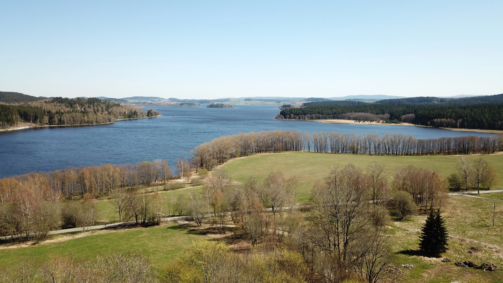

Zaniklá obec na pravém břehu Lipna. Historické záznamy okolo tisíce let. Před válkou zde žilo okolo 150 obyvatel v několika velikých statcích.
An abandoned village on the Austrian bank of Lipno with over thousand years of historical records. Before the war, about 150 inhabitants lived in several large farms.
